Pick 也可以依其厚薄程度而分成三大類：
〈一〉Thin﹝一般是 0.46~0.58mm﹞
〈二〉Medium﹝一般是 0.58~0.72mm﹞
〈三〉Heavy﹝一般是 0.72~1.2mm﹞
將常用的撥奏方法、撥奏符號和 MP3 範例放在一起，方便練習與快速瀏覽。
結他撥奏俗稱『掃結他』。
結他撥奏『掃結他』一方面可以用手，另一方面也可以用匹克『Pick』來進行的。
其實掃結他的方法可以說是千變萬化，但其中也可以歸納出一些簡單的形式。所以我想借用這個網頁來介紹一些結他的撥奏方法，讓一些初學結他的人對撥奏結他『掃結他』有較深的認識
當然 Practice make perfect『多練習能使技巧進步』啦！
首先，我在此特別鳴謝史密夫先生能提供一些練習檔案，好讓我能完成這個網頁。
以下的各個例子都是以 G → C → D → G 和弦來作進行。而大家更可以隨著附上的 MP3 檔案來跟著學習。
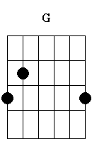
→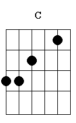
→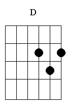
→Pick 大致上可以分成兩類：
| 〈一〉是一般普通的Pick。 | |
| 〈二〉是姆指Pick﹝俗稱指套﹞ |
以下各個符號均為常見的節奏與撥奏記號，請參考下表練習。
| 向上撥奏『向上掃』，即用手指或匹克由第一弦撥至第六弦。 | |
| 向下撥奏『向下掃』，即用手指或匹克由第六弦撥至第一弦。 |
這個練習是訓練向上及向下撥奏的技巧。
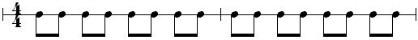
下列為撥奏練習，請按圖播放對應 MP3 範例。
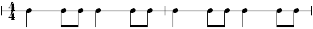
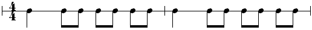
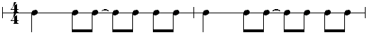
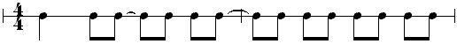
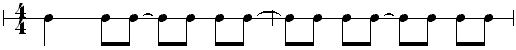
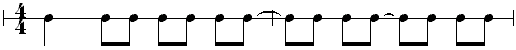
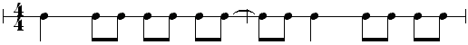
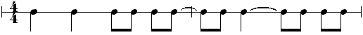
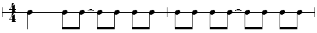
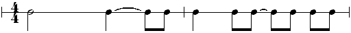